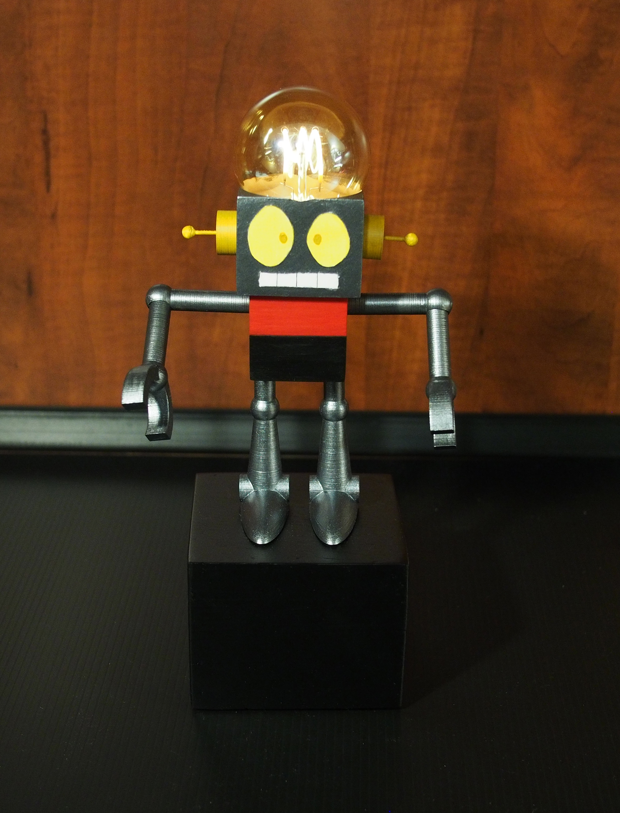
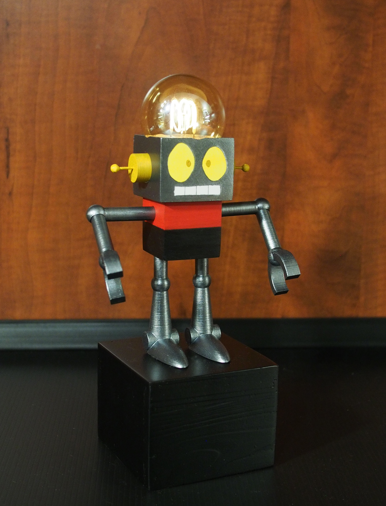

I did this project to improve on my CAD design skills by modelling from scratch, and made it a challenge for myself to model each piece in a way so it would need no support structures when 3D printed. It is based off the robot main character in the tv show 'Whatever Happened to Robot Jones?'
To look at the design process that went on behind this project
see more  